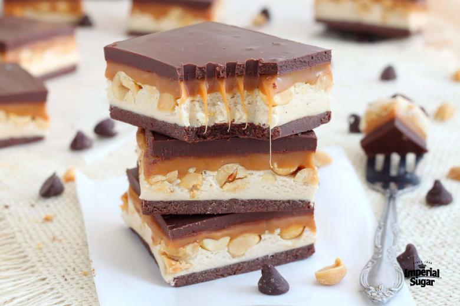

Homemade Snickers Bar

Description
This Snickers® copycat recipe only has 7 ingredients and takes less than 30 minutes to prepare.
Satisfy your chocolate candy bar cravings without ever leaving the house!
Ingrediens
- 1 cup semi-sweet chocolate chips
- 3 tablespoons creamy peanut butter
- 7 oz marshmallow fluff
- 1/4 cup creamy peanut butter
- 1 1/2 cups Imperial Sugar Confectioners Powdered Sugar
- 1 cup dry roasted unsalted peanuts
- 11 ounces caramel candies, unwrapped
- 1/4 cup heavy cream
- 1 cup semi-sweet chocolate chips
- 3 tablespoons creamy peanut butter
Steps
- Line a 9x13-inch baking pan with parchment paper. Set aside.
- Place 1 cup of chocolate chips and 3 tablespoons of peanut butter in a heat-proof bowl.
Microwave for 60 seconds and stir until smooth and combined.
If needed, continue to microwave in 3-second intervals until smooth.
- Pour melted chocolate in prepared pan and spread evenly.
Place pan in freezer for 2-3 minutes or until hardened.
- Meanwhile, in a clean bowl add marshmallow fluff, 1/4 cup peanut butter, and powdered sugar. With a wooden spoon or spatula stir until
it forms a soft dough.(Can be done in a mixing bowl using dough hook as well.)
- Remove dough from bowl and press it on top of chocolate layer.
- Sprinkle peanuts on top, gently pressing them in. Set aside.
- In a small saucepan add caramels and heavy cream. Cook over medium heat, constantly stirring until melted.
Immediately pour over peanuts, spreading it all over with back of a spoon.
- Refrigerate for five minutes until set.
- In a heat-proof bowl, melt remaining chocolate chips and peanut butter.
Pour over caramel layer, spreading evenly.
- Place pan in fridge for 10 minutes until chocolate is set.
- With a sharp knife, cut into bars.